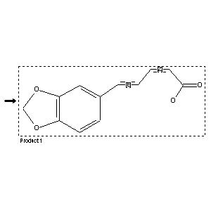

|  |
| FA | RX(1); FLST(1); RX(1) |
Reaction (1 of 1)
| Reaction ID | 5709596 |
| Product BRN | 85620 |
| Product | 5-benzo[1,3]dioxol-5-yl-penta-2,4-dienoic acid |
| No. of Reaction Details | 1 |
Reaction Details (1 of 1)
| Reaction Classification | Preparation (half reaction) |
| Citation Pointer | 3171502; Journal; Dallacker et al.; CHBEAM; Chem.Ber.; 104; 1971; 2517,2520;3214879; Journal; Feugeas; BSCFAS; Bull.Soc.Chim.Fr.; 1964; 1892;3220501; Journal; Normant; Feugeas; COREAF; C.R.Hebd.Seances Acad.Sci.; 258; 1964; 2846;3171502; Journal; Dallacker et al.; CHBEAM; Chem.Ber.; 104; 1971; 2517,2520;3340456; Journal; Singh et al.; PYTCAS; Phyt |
Reference (1 of 4)
| Citation Number | 3171502 |
| Document Type | Journal |
| Authors | Dallacker et al. |
| CODEN | CHBEAM |
| Journal Title | Chem.Ber. |
| (Series) Volume | 104 |
| Publication Year | 1971 |
| Page | 2517,2520 |
Reference (2 of 4)
| Citation Number | 3214879 |
| Document Type | Journal |
| Authors | Feugeas |
| CODEN | BSCFAS |
| Journal Title | Bull.Soc.Chim.Fr. |
| Publication Year | 1964 |
| Page | 1892 |
Reference (3 of 4)
| Citation Number | 3220501 |
| Document Type | Journal |
| Authors | Normant; Feugeas |
| CODEN | COREAF |
| Journal Title | C.R.Hebd.Seances Acad.Sci. |
| (Series) Volume | 258 |
| Publication Year | 1964 |
| Page | 2846 |
Reference (4 of 4)
| Citation Number | 3340456 |
| Document Type | Journal |
| Authors | Singh et al. |
| CODEN | PYTCAS |
| Journal Title | Phytochemistry |
| (Series) Volume | 15 |
| Publication Year | 1976 |
| Page | 2018 |